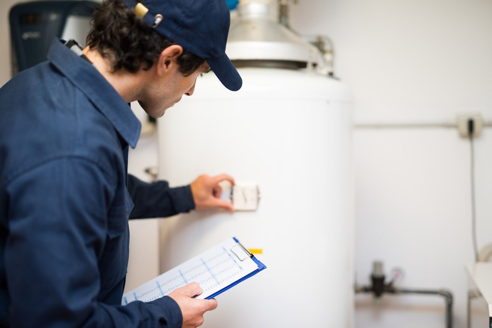

Hot Water Heater Repair for Richardson, TX
When you need hot water heater repair for Richardson, TX, trust Speake's Plumbing, Inc. to deliver fast, safe, and dependable service. Our team handles everything from leaks to full system failures with care and precision. Call now at 972-271-9144 to schedule your repair and restore your hot water quickly.
Reliable Water Heater Repair Services
A failing water heater can disrupt your entire day. At Speake's Plumbing, Inc., we diagnose problems quickly and provide clear solutions. Whether your system is gas or electric, we bring the tools and expertise needed to fix it right.
We handle common issues such as the following:
- Inconsistent water temperature.
- Strange noises from the tank.
- Rust-colored water.
- Low hot water pressure.
- Complete loss of hot water.
Signs Your Water Heater Needs Repair
- Water pooling near the unit.
- Rising energy bills without explanation.
- Unusual odors from hot water.
- Pilot light issues in gas systems.
- Aging equipment over 8–12 years.
Our Repair Process: What to Expect
- Inspection: We assess the unit, connections, and energy source.
- Diagnosis: We identify the root cause of the issue.
- Clear explanation: You get straightforward repair options.
- Professional repair: We use quality parts and proven methods.
- Testing: We confirm safe operation and consistent performance.
Gas Water Heater Expertise
Gas systems require careful handling and technical skill. Our team is trained to manage gas water heater repair for Richardson, TX, with precision and safety. We address faulty pilot lights, gas valve problems, burner issues, and ventilation concerns.
Preventative Maintenance Tips
- Flush the tank annually to remove sediment.
- Check the anode rod for corrosion.
- Test the pressure relief valve.
- Inspect for leaks or rust regularly.
- Schedule professional inspections.
Call 972-271-9144 now or visit our contact page to schedule service.
